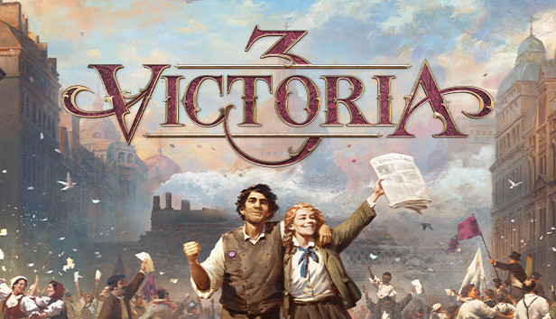
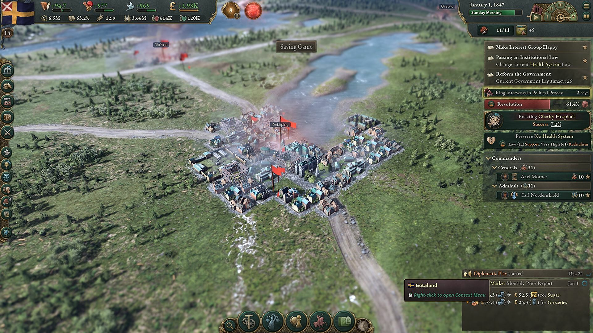
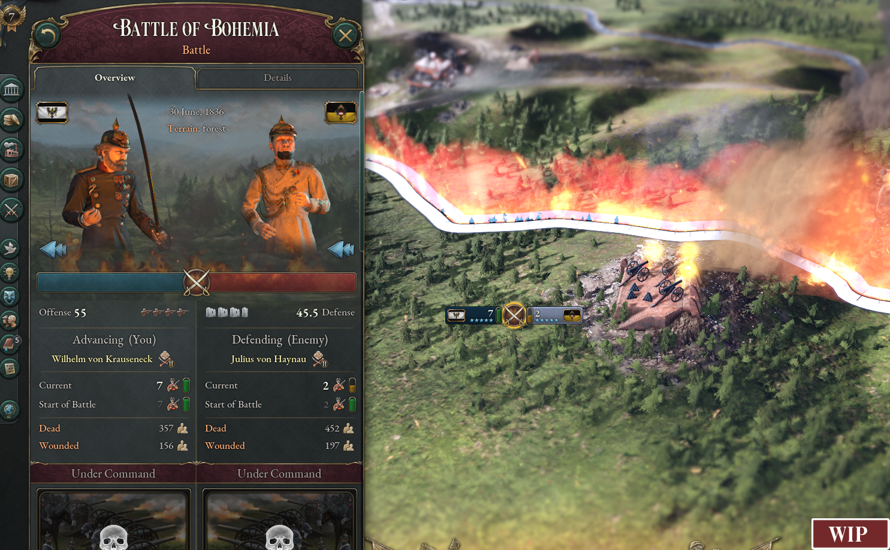

Victoria 3 is a simulation game that is taking place in the Victorian era. Economics, Politics and Colonialism is the main focus of this game.
As of October the 30th 2022 I have around 10 hours or more in this game and the game was released one week ago. First of all I want to explain why I love this game. Victoria 3 is really game which makes you feel that you are in that world, ruling your country into the age of Industrialization and prosperity which it bring along with it. That aspect of the game is my favorite, it's soo easy to roleplay in Victoria 3.
In the picture above you can see an ingame screenshot of the game map. The player is playing as the Country of Sweden and is zoomin into the City of Jönköping. In this game, the cities you rule over can grow or become ghost towns depending on the decisions you make! So be carefull if you are going to use childeren in you mines, it can have consequenses!
The picture above is from the game, this is how the war mechanics in the game looks like.
I personaly like this mechanic which is newly implemented by the producers, but this war mechanics
has become a very contreversial thing in the Victoria 3 community. But in my opinion, it's a very good idea!
I hope that you will also like the game as much as I do! Now, go and lead you Nation to Prosperity!